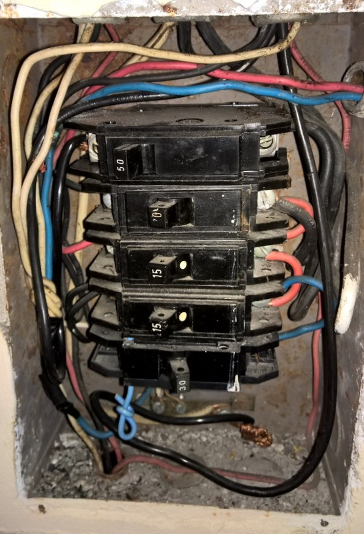
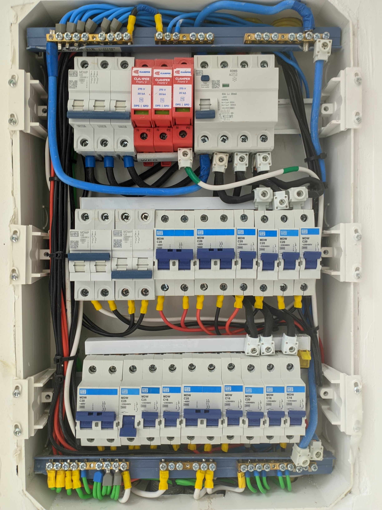
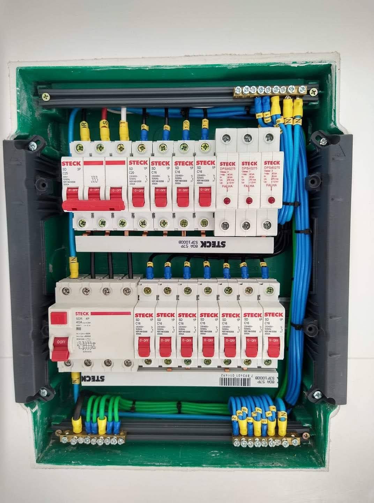

Instalação elétrica antiga: sinais de que está na hora de renovar
Publicado em · Rotiv Elétrica e Refrigeração
Grande parte das residências no Brasil ainda funciona com instalações elétricas feitas há décadas, sem qualquer atualização. Com o tempo, o consumo de energia das famílias aumentou muito — mais aparelhos, mais potência, mais demanda — mas a fiação continua a mesma de quando a casa foi construída.
Isso não é apenas um problema de conforto. Uma instalação elétrica antiga e sobrecarregada é uma das principais causas de incêndios residenciais e de queima de eletrodomésticos no país. Reconhecer os sinais de alerta a tempo é fundamental para evitar prejuízos e garantir a segurança de quem mora no imóvel.

Quadros elétricos antigos e subdimensionados são um sinal claro de que a instalação precisa ser renovada.Por que a instalação elétrica envelhece?
A instalação elétrica de uma residência é projetada para uma determinada carga, com base no consumo esperado no momento da obra. Com o passar dos anos, o número de equipamentos elétricos em casa aumenta significativamente: geladeiras mais modernas, ar-condicionado, chuveiro elétrico, máquina de lavar, televisores, computadores, carregadores e muito mais.
Além da sobrecarga, os materiais também se degradam com o tempo. Fios com isolamento deteriorado, disjuntores ultrapassados, caixas de passagem com conexões soltas e ausência de aterramento são problemas que se acumulam silenciosamente — até causarem um curto-circuito ou um princípio de incêndio.
Atenção: Uma instalação elétrica subdimensionada não apresenta sinais visíveis na maioria das vezes. Por isso, a vistoria técnica periódica por um eletricista qualificado é a forma mais segura de identificar problemas antes que eles se agravem.
Principais sinais de que a instalação precisa ser renovada
1. Disjuntores que desarmam com frequência
Se os disjuntores do seu quadro elétrico desarmam repetidamente ao usar determinados aparelhos ou ao ligar mais de um equipamento ao mesmo tempo, é um sinal claro de que a instalação está sobrecarregada. O disjuntor protege a rede desarmando nessas situações, mas isso não é normal e indica que o circuito precisa ser revisto.
2. Tomadas e interruptores que esquentam
Tomadas ou interruptores quentes ao toque indicam problemas nas conexões internas, como fios frouxos ou mal dimensionados. Esse aquecimento pode evoluir para um curto-circuito e, em casos mais graves, para um incêndio. Nunca ignore esse sinal.
3. Cheiro de queimado sem causa aparente
Um odor de plástico ou borracha queimando, mesmo sem nenhum aparelho ligado visivelmente com problema, pode indicar que algum ponto da instalação está superaquecendo. É um dos sinais mais sérios e exige ação imediata.
4. Lâmpadas que piscam ou têm brilho instável
Variações na iluminação, como lâmpadas que piscam ao ligar outros aparelhos, podem indicar queda de tensão causada por sobrecarga na rede, fiação inadequada ou conexões com mau contato.
5. Fiação aparente e sem proteção
Instalações com fios expostos, emendas improvisadas fora de caixas de passagem ou fios sem proteção conduitada são situações de risco direto, especialmente em casas mais antigas onde reformas foram feitas de forma não planejada.
6. Ausência de aterramento
Instalações antigas geralmente não têm aterramento. Isso significa que em caso de falha em algum aparelho, a corrente elétrica não tem para onde escoar com segurança. O aterramento é obrigatório pela norma NBR 5410 e é fundamental para proteger tanto os equipamentos quanto as pessoas.
7. Quadro elétrico muito antigo ou com fusíveis de rolha
Quadros com fusíveis de rolha (aqueles de vidro ou cerâmica que se parafusam) são tecnologia completamente ultrapassada. Além de menos seguros, permitem que sejam instalados fusíveis inadequados para a carga do circuito, o que aumenta o risco de acidentes. A substituição por disjuntores modernos é indispensável.

Quadro elétrico moderno com disjuntores adequados e proteção DPS garante mais segurança.Quando a instalação elétrica precisa ser completamente refeita?
Em alguns casos, reparos pontuais não resolvem o problema. A instalação elétrica precisa ser totalmente renovada quando:
- A fiação é de alumínio (muito comum em casas das décadas de 1970 e 1980, mais sujeita a oxidação e mau contato)
- O imóvel passou por reformas sucessivas sem planejamento elétrico
- Não há aterramento em nenhum ponto da casa
- A quantidade de circuitos é insuficiente para o consumo atual
- O quadro elétrico não comporta a adição de novos disjuntores
- Há mais de 20 anos desde a última atualização da instalação
O que é avaliado em uma vistoria elétrica?
Uma vistoria técnica feita por um eletricista qualificado analisa os principais pontos da instalação para identificar falhas, inadequações e riscos. O processo costuma incluir:
| Item avaliado | O que é verificado |
|---|---|
| Quadro elétrico | Tipo, capacidade dos disjuntores e organização dos circuitos |
| Fiação | Material, bitola e estado do isolamento |
| Aterramento | Presença e continuidade do aterramento |
| Tomadas e interruptores | Mau contato, aquecimento e conformidade com NBR 5410 |
| Proteções | Presença de DR e DPS nos circuitos adequados |
| Carga instalada | Se a rede suporta o consumo atual do imóvel |
Qual o risco de manter uma instalação elétrica antiga?
Os riscos vão muito além do incômodo de um disjuntor que desarma. Uma instalação elétrica fora das normas pode causar:
- Queima de eletrodomésticos e equipamentos eletrônicos
- Choques elétricos, especialmente em áreas úmidas como banheiros e cozinhas
- Incêndios por aquecimento de cabos ou curto-circuito
- Aumento no consumo de energia elétrica devido à perda por resistência
- Dificuldade de aprovação em laudos técnicos para financiamento ou locação do imóvel
Renovar a instalação elétrica vale a pena?
Sim. Além de eliminar os riscos de segurança, uma instalação elétrica atualizada proporciona mais eficiência, permite a instalação de novos circuitos para equipamentos modernos como Wallbox e ar-condicionado, e valoriza o imóvel.
O investimento em uma reforma elétrica é muito menor do que o custo de reparar danos causados por um curto-circuito ou incêndio, sem contar os riscos à integridade física dos moradores.

Instalação elétrica renovada com fiação dimensionada, aterramento e organização profissional.Perguntas frequentes
Com quantos anos uma instalação elétrica precisa ser trocada?
Não existe um prazo fixo, mas instalações com mais de 20 anos merecem uma vistoria técnica. O estado real depende do material utilizado, das condições do imóvel e das adaptações feitas ao longo do tempo.
É possível fazer apenas a troca do quadro elétrico sem mudar a fiação?
É possível, mas a solução pode ser incompleta. Se a fiação estiver degradada ou subdimensionada, apenas trocar o quadro não resolve os riscos associados à rede de distribuição interna.
Como saber se minha casa tem aterramento?
Casas com aterramento possuem tomadas de três pinos, onde o pino central é o fio terra. Mesmo assim, a presença das tomadas não garante que o aterramento esteja funcional — é necessário testar com equipamento específico.
Posso fazer a vistoria sem reformar?
Sim. A vistoria é um diagnóstico independente. O eletricista avalia o estado da instalação e aponta as prioridades, e você decide quais intervenções fazer e em qual ordem.
Conclusão
A instalação elétrica é uma das partes mais importantes de uma residência e, justamente por estar escondida nas paredes, tende a ser negligenciada. Reconhecer os sinais de que algo está errado e agir antes que o problema se agrave é a melhor forma de proteger a sua casa e a sua família.
Para quem está em Nova Iguaçu, na Baixada Fluminense ou em outras regiões do Rio de Janeiro, a Rotiv realiza vistorias técnicas e executa reformas elétricas residenciais e comerciais com segurança, organização e total conformidade com as normas técnicas.
Leia também
Veja também outros artigos do nosso blog:
Suspeita de problemas na instalação elétrica da sua casa?
A Rotiv Elétrica e Refrigeração realiza vistorias técnicas e reformas elétricas completas em Nova Iguaçu e em toda a região do RJ. Fale com a nossa equipe.
Solicitar orçamento pelo WhatsApp